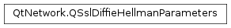

QSslDiffieHellmanParameters¶
Note
This class was introduced in Qt 5.8.
Synopsis¶
Functions¶
Static functions¶
- def
defaultParameters() - def
fromEncoded(device[, format=QSsl.Pem]) - def
fromEncoded(encoded[, format=QSsl.Pem])
Detailed Description¶
The
PySide2.QtNetwork.QSslDiffieHellmanParametersclass provides an interface for Diffie-Hellman parameters for servers.
PySide2.QtNetwork.QSslDiffieHellmanParametersprovides an interface for setting Diffie-Hellman parameters to servers based onPySide2.QtNetwork.QSslSocket.
-
class
PySide2.QtNetwork.QSslDiffieHellmanParameters¶ -
class
PySide2.QtNetwork.QSslDiffieHellmanParameters(other) Parameters: other – PySide2.QtNetwork.QSslDiffieHellmanParametersConstructs an empty
PySide2.QtNetwork.QSslDiffieHellmanParametersinstance.If an empty
PySide2.QtNetwork.QSslDiffieHellmanParametersinstance is set on aPySide2.QtNetwork.QSslConfigurationobject, Diffie-Hellman negotiation will be disabled.See also
PySide2.QtNetwork.QSslDiffieHellmanParameters.isValid()PySide2.QtNetwork.QSslConfigurationConstructs an identical copy of
other.
-
PySide2.QtNetwork.QSslDiffieHellmanParameters.Error¶ Describes a
PySide2.QtNetwork.QSslDiffieHellmanParameterserror.Constant Description QSslDiffieHellmanParameters.NoError No error occurred. QSslDiffieHellmanParameters.InvalidInputDataError The given input data could not be used to construct a PySide2.QtNetwork.QSslDiffieHellmanParametersobject.QSslDiffieHellmanParameters.UnsafeParametersError The Diffie-Hellman parameters are unsafe and should not be used.
-
static
PySide2.QtNetwork.QSslDiffieHellmanParameters.defaultParameters()¶ Return type: PySide2.QtNetwork.QSslDiffieHellmanParametersReturns the default
PySide2.QtNetwork.QSslDiffieHellmanParametersused byPySide2.QtNetwork.QSslSocket.This is currently the 1024-bit MODP group from RFC 2459, also known as the Second Oakley Group.
-
PySide2.QtNetwork.QSslDiffieHellmanParameters.error()¶ Return type: PySide2.QtNetwork.QSslDiffieHellmanParameters.ErrorReturns the error that caused the
PySide2.QtNetwork.QSslDiffieHellmanParametersobject to be invalid.
-
PySide2.QtNetwork.QSslDiffieHellmanParameters.errorString()¶ Return type: unicode Returns a human-readable description of the error that caused the
PySide2.QtNetwork.QSslDiffieHellmanParametersobject to be invalid.
-
static
PySide2.QtNetwork.QSslDiffieHellmanParameters.fromEncoded(encoded[, format=QSsl.Pem])¶ Parameters: - encoded –
PySide2.QtCore.QByteArray - format –
PySide2.QtNetwork.QSsl.EncodingFormat
Return type: Constructs a
PySide2.QtNetwork.QSslDiffieHellmanParametersobject using the byte arrayencodedin either PEM or DER form as specified byencoding.Use the
PySide2.QtNetwork.QSslDiffieHellmanParameters.isValid()method on the returned object to check whether the Diffie-Hellman parameters were valid and loaded correctly.- encoded –
-
static
PySide2.QtNetwork.QSslDiffieHellmanParameters.fromEncoded(device[, format=QSsl.Pem]) Parameters: - device –
PySide2.QtCore.QIODevice - format –
PySide2.QtNetwork.QSsl.EncodingFormat
Return type: Constructs a
PySide2.QtNetwork.QSslDiffieHellmanParametersobject by reading fromdevicein either PEM or DER form as specified byencoding.Use the
PySide2.QtNetwork.QSslDiffieHellmanParameters.isValid()method on the returned object to check whether the Diffie-Hellman parameters were valid and loaded correctly.In particular, if
deviceisnullptror not open for reading, an invalid object will be returned.- device –
-
PySide2.QtNetwork.QSslDiffieHellmanParameters.isEmpty()¶ Return type: PySide2.QtCore.boolReturns
trueif this is a an emptyPySide2.QtNetwork.QSslDiffieHellmanParametersinstance.Setting an empty
PySide2.QtNetwork.QSslDiffieHellmanParametersinstance on aPySide2.QtNetwork.QSslSocket-based server will disable Diffie-Hellman key exchange.
-
PySide2.QtNetwork.QSslDiffieHellmanParameters.isValid()¶ Return type: PySide2.QtCore.boolReturns
trueif this is a validPySide2.QtNetwork.QSslDiffieHellmanParameters; otherwise false.This method should be used after constructing a
PySide2.QtNetwork.QSslDiffieHellmanParametersobject to determine its validity.If a
PySide2.QtNetwork.QSslDiffieHellmanParametersobject is not valid, you can use thePySide2.QtNetwork.QSslDiffieHellmanParameters.error()method to determine what error prevented the object from being constructed.
-
PySide2.QtNetwork.QSslDiffieHellmanParameters.__ne__(rhs)¶ Parameters: rhs – PySide2.QtNetwork.QSslDiffieHellmanParametersReturn type: PySide2.QtCore.bool
-
PySide2.QtNetwork.QSslDiffieHellmanParameters.__eq__(rhs)¶ Parameters: rhs – PySide2.QtNetwork.QSslDiffieHellmanParametersReturn type: PySide2.QtCore.bool
-
PySide2.QtNetwork.QSslDiffieHellmanParameters.swap(other)¶ Parameters: other – PySide2.QtNetwork.QSslDiffieHellmanParametersSwaps this
PySide2.QtNetwork.QSslDiffieHellmanParameterswithother. This function is very fast and never fails.
© 2018 The Qt Company Ltd. Documentation contributions included herein are the copyrights of their respective owners. The documentation provided herein is licensed under the terms of the GNU Free Documentation License version 1.3 as published by the Free Software Foundation. Qt and respective logos are trademarks of The Qt Company Ltd. in Finland and/or other countries worldwide. All other trademarks are property of their respective owners.